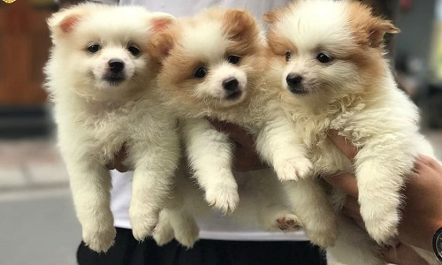

Chó Phốc sóc (Pomeranian) là giống chó cảnh có nguồn gốc từ châu Âu. Tên của chúng bắt nguồn từ địa danh Pomerania, trước là vùng Trung Âu, ngày nay là miền Tây Bắc Ba Lan và Đông Bắc Đức.
Phốc Sóc được biết đến rộng rãi ở Anh vào năm 1761, tại lễ cưới Vua George, Hoàng Hậu Charlotte đã mang chú chó cưng của mình đi cùng. Sau này nữ hoàng Victoria tiếp tục lai tạo với các giống chó nhập từ Châu Âu khác, cho ra giống Phốc Sóc có kích thước nhỏ và màu lông đa dạng như hiện nay.
Back